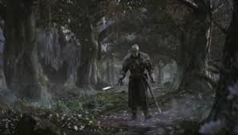
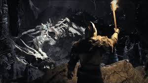
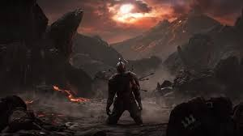
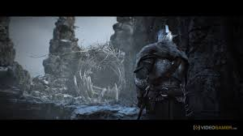

Desarrollado por From Software, Dark Souls II es la muy esperada segunda entrega del exigente juego de 2011 Dark Souls. La acción de la vieja escuela que ofrecía este RPG era algo único que cautivó la imaginación de los jugadores de todo el mundo gracias a sus increíbles desafíos e intensas recompensas emocionales Dark Souls II fusiona la famosa dificultad de la franquicia con nuevas y espectaculares innovaciones jugables que potenciarán tanto el juego en solitario como la experiencia multijugador. Únete a este oscuro viaje y experimenta los sobrecogedores encuentros con enemigos, peligros demoniacos y el reto constante que solo FROM SOFTWARE puede ofrecer. Como ya hizo con Demons Souls y DARK SOULS 1. Ancestros espirituales de Dark Souls 2
| RECORRE NUMERÓSOS LUGARES EN ESTA AVENTURA | |
|---|---|
|  |  |
|  |  |